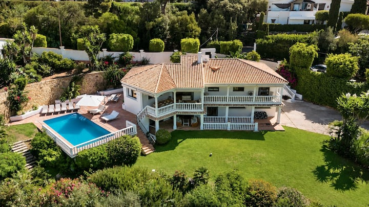
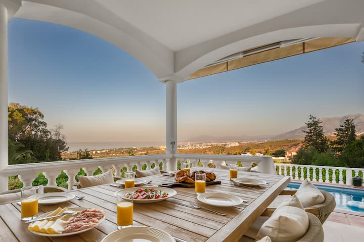
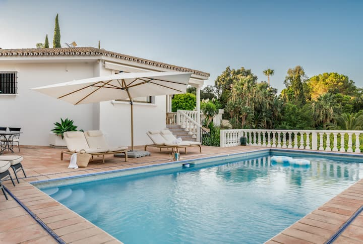
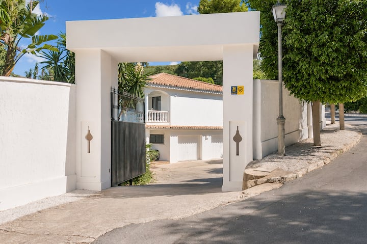
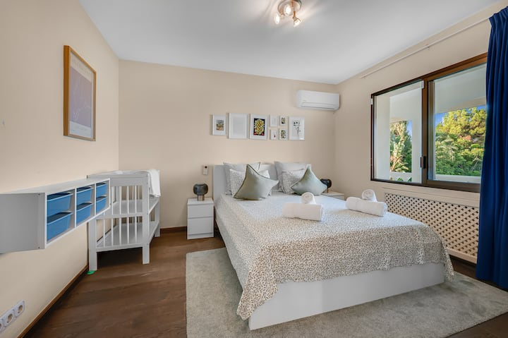
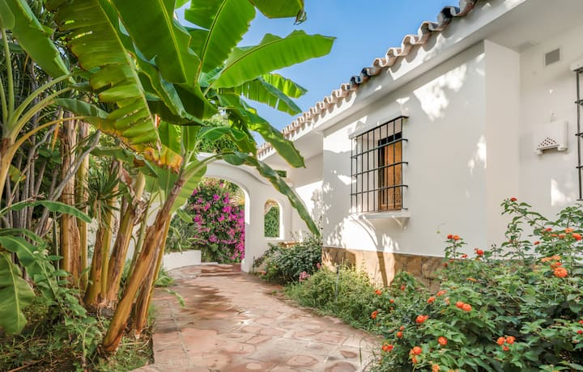
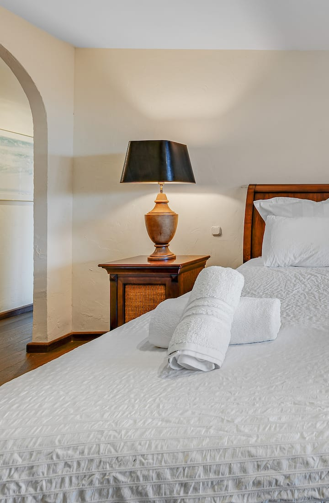

De Heren van De Boys
De Villa met het Privézwembad
El Rosario, Marbella East
Spanje
Hogeschool voor Hekserij, Hocus-Pocus & Hydratatie
HOGWARTS AAN ZEE
🎃 HALLOWEEN-EDITIE 🎃
29 OKT – 1 NOV 2026
El Rosario • Marbella
Geachte heren, met genoegen delen wij u mede dat u bent TOEGELATEN tot Hogwarts aan Zee. Het semester loopt van donderdag 29 oktober t/m zondag 1 november 2026. Wij verwachten uw uil uiterlijk gisteren.
A. Dumbledore (Treb) — Schoolhoofd
mede namens het Ministry of Magic, Afd. Muggle-vermaak
Deze brief is geen juridisch bindend document, met uitzondering van het gedeelte over de aanbetaling (zie Bijlage IX).
📅 29 okt – 1 nov 2026📍 El Rosario, Marbella East🧙 8 tovenaars (van wie 1 geest)🦉 RSVP vóór 1 sep🎭 Gek pak mee🍺 Daytime drinking is the best time drinking
Bijlage I — Toelatingsregister
GOEDGEKEURD
🧙 Klik op een student voor zijn magische ware aard.
Schoolhoofd van Hogwarts aan Zee; deelt huispunten en shotjes uit met dezelfde milde glimlach.
📰
“Voorzitter Dumbledore werd om 04:00 op de dansvloer gesignaleerd. Zijn Patronus is naar verluidt een discobal.” — R.S., the Daily Prophet
BEVESTIGD ✓
⏳
Marc
Hoofd Beveiliging van Gringotts
Bewaakt Kluis 713 én de pot; doet IRL in payment security, dus discussies over wie wat betaald heeft zijn zinloos.
📰
“Bronnen melden dat hij bij het rondje geven om tweefactorauthenticatie vraagt.” — R.S., the Daily Prophet
BEVESTIGD ✓
⏳
Derk
Voldemort
In april nog Sauron, in oktober You-Know-Who — twee keer Dark Lord in één kalenderjaar, een Ministerieel record.
📰
“Ooggetuigen zagen de Dark Lord zonnebrandcrème factor 50 gebruiken. ‘Ik ben bleek, geen dom,’ aldus een ingewijde.” — R.S., the Daily Prophet
BEVESTIGD ✓
⏳
Samuel
Hagrid — Sleutelbewaarder en Terreinknecht
Sleutelbewaarder en Terreinknecht; kweekt zijn oogst op een vers aangekocht landgoed in Hengelo (Gld.) en neemt eigen pompoenen mee, want die Spaanse “stellen niks voor”.
📰
“Zijn pompoenen zijn verdacht groot. Het Ministerie stelt geen vragen.” — R.S., the Daily Prophet
🦉 UIL ONDERWEG
⏳
David
Draco Malfoy, mét snor
Slytherin-blond, snor van een kampioen. Zit tot vrijdag ‘voor werk’ in Florence — de enige stad waar de rijen zelf in de rij staan. Hij zou ‘kijken of hij het kan inkorten’. Het Ministerie kijkt terug.
📰
“Gesignaleerd op een piazza, turend naar vluchten FLR→AGP. Zijn vader zal hiervan horen. Florence ook.” — R.S., the Daily Prophet
🦉 UIL ONDERWEG
⏳
Peeg
Severus Snape — Potions Master
Potions Master: verantwoordelijk voor de cocktails, het oordelend kijken en het langzaam dichtslaan van de shaker. Dit jaar waarschijnlijk verhinderd — reden door het Ministerie gezien en zonder verdere vragen goedgekeurd.
📰
“Op de vraag of hij nog een biertje wilde antwoordde Snape slechts: ‘Altijd.’” — R.S., the Daily Prophet
BEVESTIGD ✓
⏳
Bram
Harry Potter
De Jongen Die Boekte; litteken opgelopen bij het voorschieten van de aanbetaling.
📰
“Het litteken? De aanbetaling, 2026. De rest is marketing.” — R.S., the Daily Prophet
🦉 UIL ONDERWEG
⏳
Jaap 🎸
Kasteelgeest (mét elektrische gitaar)
Locatiemanager voor film & series — heeft déze locatie eindelijk in zijn eigen agenda gemanaged. De geest is los. Alleen zijn uil doet er nog over.
📰
“Jarenlang ‘misschien’. Nu scheurde er ineens een gitaarsolo door de Great Hall: HIJ GAAT MEE.” — R.S., the Daily Prophet
P. (Pascal) is voorwaardelijk vrijgesteld van toelating: rond de vertrekdatum wordt bij hem thuis een kleine tovenaar verwacht. Zijn uil houdt alle opties open. Zie Examen 2.
Het Ministerie is niet aansprakelijk voor snorren (art. 3, lid David), noch voor steden met rijen (art. 3a, lid Florence).
Bijlage II — De Reisverordening
GOEDGEKEURD
“Ik zweer plechtig dat ik niets goeds in de zin heb.”
🇳🇱
Amsterdam
AMS → AGP
Uilenroute, gate D14
🇫🇷
Paris
CDG → AGP
Uilenroute Zuid
🇩🇪
Munich
MUC → AGP
Uilenroute Oost
🚗
Vliegende Ford Anglia
AGP → El Rosario
vlieghoogte: laag, stijl: Weasley
🏛️
Florence
FLR → AGP
uiterlijk vr 30 okt — dienstbevel
Bijlage II-B — Gedeponeerde Herinnering
Zeven tovenaars stapten op de Hogwarts Express. Dit is wat de Pensieve zich ervan herinnert.
ᚠᚨᛟᛞᛗᛉ
🫙De herinnering wordt opgehaald…
🧙♂️ Treb — Albus Dumbledore
🏦 Marc — Hoofd Beveiliging Gringotts
👁️ Derk — You-Know-Who
🎃 Samuel — Hagrid
🐍 David — Draco Malfoy (mét snor)
🧪 Peeg — Severus Snape
⚡ Bram — Harry Potter
👻 Jaap — Kasteelgeest (zweeft gewoon mee)
🎬 Herinnering gewonnen met Grok Imagine | 🎵 Muziek: Suno AI | 🫙 Pensieve: eigendom van het Schoolhoofd
Herinneringen kunnen afwijken van de werkelijkheid, in het bijzonder na hole 9.
Bijlage III — Huisvestingsbesluit: Hogwarts aan Zee
GOEDGEKEURD

“Hogwarts aan Zee vanaf een bezem”
“Krachtens Ministerieel Besluit 2026/713 wordt u gehuisvest in het kasteel ‘Grand Villa with Amazing Golf & Sea View’, El Rosario, Marbella East: 4 slaapzalen, 5 bedden, 4,5 badkamers (de halve is voor de geest), en een PRIVÉ GROTE MEER (chloor-editie — zeldzaam in deze uithoek van de toverwereld). Panorama over de Marbella Golf Club, de zee, Gibraltar en op heldere dagen Marokko én je eigen toekomst. Het terrein is ommuurd en bewaakt: beschermd door meer dan een Fidelius Charm (er is óók een slagboom met een meneer erin). Huismeester: Collin — spreekt vloeiend Muggles én Nederlands.”
5★ op Airbnb, 0★ van het Ministry of Magic (wegens overmatig magiegebruik).
Het Kasteel in Beeld

“De Great Hall, ontbijteditie — plafond vervangen door uitzicht”

“Het Black Lake (chloor-editie, meermens-vrij)”

“Platform 9¾ — ren er NIET met je trolley doorheen, de muur is hier écht”

“Slaapzaal Zuid — het ledikantje is voor wie het eerst K.O. gaat”

“Forbidden Forest (met bananenbomen en bougainville)”

“Slaapzaal Noord — handdoeken gevouwen door huiselfen (Collin)”
Zwembad niet geschikt voor meermensen; wél voor mannen van in de dertig die ‘bommetje’ roepen.
Verplicht Keuzevak: Quidditch voor Muggles — 18 holes Santa Clara
GOEDGEKEURD
Santa Clara Golf Marbella ligt op een paar minuten van het kasteel — waar golfen en zuipen samenkomen 🍺
GEZONDHEIDSADVIES
“De enige sport waarbij Muggles óók met een stok door het gras mogen. Achttien holes, één bierkar die de baan rondrijdt, en een officieel Ministerieel gezondheidsadvies: Daytime Drinken — Hydrateren is key. Wie een birdie slaat mag hem een Golden Snitch noemen. Wie een bal het water in slaat, heeft hem ‘aan de meermensen geofferd’. En zodra het in Noord-Europa slecht weer is — dus: altijd — treedt automatisch het Strandprotocol in werking: daytime drinken op het strand, met zicht op de regenradar van thuis. Officieel Ministerieel motto: Daytime drinking is the best time drinking (Verordening 12.00–18.00).”
🍺
De bierkar
“Komt elke 3 holes langs. Vaker als je lief kijkt.”
🏌️
Handicap-systeem
“Je handicap stijgt met elk biertje; dat heet balans.”
🐉
Drakenwaarschuwing
“Op hole 12 is een draak gesignaleerd (bron: the Daily Prophet, dus waarschijnlijk onzin).”
archiefbeelden én profetische beelden: de bierkar-dienstregeling, het bunkerincident, de kar-in-de-vijver-kwestie en het publiek bij hole 9 (bron: glazen bol, Afdeling Mysteries)
Santa Clara ligt naast het kasteel. De terugweg is dus theoretisch lopend te doen. Theoretisch.
Bogeys tellen niet indien geslagen met een cerveza in de andere hand (art. 19).
Bijlage V — Buiten het Kasteel: Marbella
AANBEVOLEN
Door het Ministerie goedgekeurde excursies voor een genootschap van acht. Alles binnen 20 minuten bezemvlucht van El Rosario.
🏖️ Strandtenten
🐟
Bono’s Beach
“Praktisch de huisbar: ligt zo’n beetje aan jullie eigen strand. Espetos, cocktails, zee. Beginnen waar je eindigt.”
🍾
Nikki Beach
“Wit, duur en decadent (Elviria). Champagne sproeien is er een erkende sport. Reserveren, heren — dit is geen chiringuito.”
🥂
La Plage Casanis & Trocadero Playa
“Voor de lange lunch die per ongeluk een diner wordt. Frans-mediterraan, voeten in het zand, tijdsbesef optioneel.”
🌃 Na zonsondergang
🍊
Casco Antiguo
“Tapas-crawl door de oude stad tot aan Plaza de los Naranjos. Sinaasappelbomen, tinto de verano, geen huiselfen.”
🛥️
Puerto Banús
“Eerst superjachten keuren (niet kopen, Marc), daarna de clubs. Wat daarna gebeurt valt onder de Room of Requirement.”
🎰
Casino Marbella
“Gringotts, maar dan omgekeerd: hier lever je je galleons juist ín. Hoofd Beveiliging Marc houdt toezicht.”
🎯 Voor de groep
🎾
Padel & tennis in El Rosario
“Onderaan de eigen urbanisatie ligt een tennisclub — staat letterlijk in de listing. Verliezers sponsoren de bierkar.”
⛵
Boot of jetski huren
“Vanuit Puerto Banús de kust langs. Kapitein Samuel heeft aantoonbare vaarervaring (bewijsmateriaal: Bijlage I).”
🐒
Dagexcursie Gibraltar
“Oftewel: Azkaban bezoeken terwijl het nog kan. Apen gegarandeerd. Teruggave van je zonnebril niet.”
Het Ministerie is niet verantwoordelijk voor reserveringen, katers of impulsief aangeschafte jachten.
Bijlage IV — Het Lesrooster
GOEDGEKEURD
Vier dagen onderwijs. Aanwezigheidsplicht. Vooral bij de practica.
DO 29 OKT — “Het Welkomstfeest”
“Platform 9¾ (in de praktijk: gate D14, Schiphol)”
“Viavia: vliegende Ford Anglia, AGP → El Rosario. Vliegen boven de A-7 is optioneel.”
“Eerste cerveza op Spaanse bodem. Traditie. Geen discussie.”
“Sorting Ceremony: de Sorting Hat (een golfpet) verdeelt de slaapzalen. Protesteren mag, helpen doet het niet. Wie sputtert krijgt de bank.”
“Eerste duik in het Black Lake.”
“Welkomstfeest in de Great Hall (BBQ).”
“Eerste les Potions — docent: prof. Snape (Peeg). ‘Het is geen mixen. Het is wetenschap.’”
“Videoverbinding met Florence. Wij tonen het zwembad.”
VR 30 OKT — “Quidditch voor Muggles”
“Tee-off Santa Clara.”
“Eerste contact met de bierkar.”
“Halfway house = De Drie Bezemstelen.”
“Aankomst David uit Florence. De opdracht was helder.”
Welkom op Samuels vers aangekochte landgoed in Hengelo (Gelderland) — hier kweekt hij zijn oogst. Oogst rijpe pompoenen 🎃, trek Mandragora's 🌱 en tik kabouters 🧌 weg — maar zet éérst je oorkleppen op, anders gillen ze je omver!
😵
Q
W
E
A
S
D
Z
X
C
🎃🌱🧌
Klaar voor de oogst, jong?
Tik rijpe pompoenen 🎃 (+25) en trek Mandragora's 🌱 (+10).
⚠️ Oorkleppen EERST aan — anders gil je er −15 bij elkaar.
🧌 Kabouter gezien? Binnen 1,5 seconde tikken = Ontgnoomd! (+15)
👆 Tik om te beginnen · 45 s
GOEDGEKEURD
U
O.W.L.-UITSLAG · KRUIDENKUNDE
🎃 Oogst: 0
⏱️ 45 s
🙉 Oorkleppen: UIT
💻 QWE / ASD / ZXC = vakjes · SPATIE = oorkleppen
🥫 Pascals Blikkenlijn
De lijn draait op gabber-BPM: ✅ goed blik = A OK · 🫙 deukblik = S AFKEUR · 🍺 cerveza = D BONUS — mis niks, anders loopt de lijn vast!
PASCALS BLIKKENLIJN B.V.☑ 0 dagen zonder deukblikvandaag: HARDCORE-DIENST
🔊
KEURZONE
KEUR
♪ 160 BPM
⏱️ 30s
Score: 0
🔥 COMBO ×0
DE LIJN LOOPT VAST!
👷
Tik om de dienst te starten!
✅ goed blik → A · 🫙 deukblik → S · 🍺 cerveza → D
De lijn wacht op niemand.
O.W.L.-cijfer
T
Blikschade
…
…
Uitbetaling van je dienst volgt per Tikkie. Ooit.
🐢 Inwerkdag🔥 HARDCORE-DIENST
💡 Protip van ploegbaas Pascal: toetsenbord A·S·D = de snelste handjes van de vloer. NB: de ploegbaas draait dit weekend mogelijk een thuisdienst — er staat een kleine aanwinst voor de lijn gepland. De lijn draait door; het eerste blikje is alvast voor hem.
🏦 Examen 3 — Gringotts Fraudewacht
Verweer tegen de Zwarte Betalingen · surveillant: het Hoofd Beveiliging zelf
Keur échte betalingen goed (veeg → of ✅) en blokkeer fraude (veeg ← of ⛔) — en tik de Niffler (of SPATIE) vóór hij er met je fooi vandoor gaat!
⏱️ 60s🪙 0🔥 reeks x0
🏦 GOUDGRIJP WISSELBANKOpdracht #1
AfzenderA. Dumbledore
Bedrag12 Galjoenen
KluisKluis 713
OmschrijvingRondje cerveza
⚠️ Bijzonder
handtekening
GOUDGRIJP · SINDS 1474
GOEDGEKEURD
GEBLOKKEERD
FRAUDE DOORGELATEN
713
Dienstbriefing — Kluis 713
Perkamenten betaalopdrachten dwarrelen op je bureau. Veeg naar rechts (→) om goed te keuren, naar links (←) om te blokkeren. Let op fraudesignalen: V. Oldemort, 666 Galjoenen, tovernet.ru, "Gringotts-Support"…
🦡 Rent er een Niffler voorbij? Tik hem (of SPATIE) binnen 2 seconden — anders is je fooi weg.
Laat You-Know-Who géén internetbankieren krijgen.
🏦 DIENSTRAPPORT — KLUIS 713
T
T — Slachtoffer van een Tikkie-scam
…
…
…
+0 House Points
⌨️ Sneltoetsen: ← blokkeer · → keur goed · SPATIE = Niffler vangen
👻 Examen 4 — Spook op Locatie
Zweef als geest-Jaap (mét gitaar) over Nederland en stempel de gevraagde filmlocatie GESCOUT. Sturen: pijltjes/WASD of slepen · Stempelen: SPATIE of de grote knop.
🎬Wachten op de regisseur…
⭐ 0🎬 0⏱️ 60s
👻🎸
SPOOK OP LOCATIE
Scout filmlocaties voor Hogwarts: De Serie. Als geest kom je overal binnen — de drone-vergunning is toch geweigerd.
▶ Tik of klik om te beginnen
⌨️ pijltjes / WASD zweven · SPATIE stempelt
U
U — Uitmuntend
Locatiemanager van het Jaar
…
⭐ 0 punten · 🎬 0 locaties
Het Ministerie erkent geen drone-vergunningen, wél geesten met een oog voor sfeer (art. 👻, lid 3).
Examenresultaten worden niet erkend door DUO, wél door de groepsapp.
Examen 5 · Danskunde · Gastcollege uit München
🍺 Trebs Schuhplattler
Herr Treb vliegt in uit München en jij plattlert mee: 🦵 A Knieschlag · 👞 S Schuhschlag · 🥾 D Stampf · 🎶 F Jodel — raak op de oempa-beat, anders klotst je Maß leeg.
🦵 A Knieschlag · 👞 S Schuhschlag · 🥾 D Stampf · 🎶 F Jodel
De kapel wacht op niemand — en de Maß ook niet.
O.W.L.-cijfer
T
Shuttlebus terug naar het hotel
…
…
Reiskosten München–Marbella worden niet vergoed door het Ministerie.
💡 Protip van Herr Treb: denk in oempa's — óóm-pa-pa — en sla je knie alsof die de rekening betaalt.
Examen 6 · Verweer tegen de Duistere Rijen · Solo-examen
🏛️ Ontsnapping uit Florence
David zit voor werk vast in Florence — een openluchtmuseum op maximale capaciteit — terwijl het weekend donderdag begint. Hij zou ‘kijken of hij het kon inkorten’. Het Ministerie was duidelijk: inkorten is geen optie, het is een opdracht. Ren naar het vliegveld: ←→ of A/D wisselt van steegje (op mobiel: tik links of rechts). Ontwijk 🤳 ☂️ 🍦 en vooral DE RIJ — pak ☕ voor een sprint, 🎫 voor punten en speur naar 🧳 zijn verloren koffer.
🏛️ Duomo🌉 Ponte V.🚉 Stazione✈️ AEROPORTO
🏛️ Duomo — max. capaciteit
⏱️ 45s
Score: 0
☕ SPRINT!
SCUSI!
🏛️
Tik om te ontsnappen uit Florence!
⬅️➡️ of A/D: wissel van steegje · ☕ sprint · 🎫 +100 · 🧳 bonus
Achtduizend Amerikanen staan tussen David en de gate. De rij heeft een eigen rij.
O.W.L.-cijfer
T
Voor eeuwig in de rij
…
…
Officiële mededeling: aperol aan de gate kost bezemsteelprijzen. Declareren kan bij niemand.
💡 Reistip van het Ministerie: wie in Florence stilstaat, sluit juridisch gezien aan in een rij. Blijf rennen, groet niemand.
🍻 De Room of Requirement
BESTAAT NIET
De kamer geeft je exact wat je nodig hebt. Voor acht heren van rond de veertig is dat: een koude pils, een gloeiende BBQ, een golfbaan, een lange tafel, een zwembad om in te hangen en één avond die uit de hand loopt.
Zwembad-hangen — de enige onderdeel van het weekend zonder blessurerisico
Zwembad-hangen — de enige onderdeel van het weekend zonder blessurerisico
De BBQ — Samuel bepaalt wanneer het vlees klaar is. Niemand anders.
Zwembadspelletjes na bier zes — er eindigt altijd iemand in het water
Cocktailuur aan de strandbar — ‘nog ééntje dan’ is juridisch bindend
Golf op Santa Clara — handicap stijgt per hole, het humeur per bierkar
Het diner — Davids speech duurt inmiddels twintig minuten en niemand grijpt in
Zaterdagnacht — acht gekke pakken gaan uit hun dak (locatie: TBD)
Beelden ter illustratie. De werkelijkheid wordt waziger, maar wél echt.
Wat er in de kamer gebeurt, blijft in de kamer. Behalve op deze video's.
🎥 De Verboden Bioscoop
NACHTVOORSTELLING
Vijf voorstellingen in de zaal die niet bestaat. Aanvang: na het bal. Titels worden niet genoemd — wie hem raadt, hoeft geen rondje te halen.
I
“Het park is af. Het hek niet. De hoofdattractie loopt los en heeft honger.”
De projector draait op magie; de beelden zijn herinneringen van de Pensieve, niet van de studio. Wie in slaap valt, haalt het eerste rondje van morgen.
🦉 De Uilenpost
GOEDGEKEURD
Heeft u een amendement op deze brief? Verstuur uw uil. Uilen vliegen nuchter; wij zijn geen uilen.
Gemiddelde bezorgtijd per uil: 0,4 seconden (EmailJS-uilen zijn sneller dan echte).
💰 Bijlage IX — Schoolgeld: Kluis 713
GOEDGEKEURD
“Krachtens het Toelatingsbesluit dient elke student zijn schoolgeld te storten in Kluis 713. Deze transactie is persoonlijk beveiligd door het Hoofd Beveiliging van Gringotts (Marc). Kobolden accepteren Galjoenen, Sikkels, Knoeten — en bij hoge uitzondering: Tikkie.”